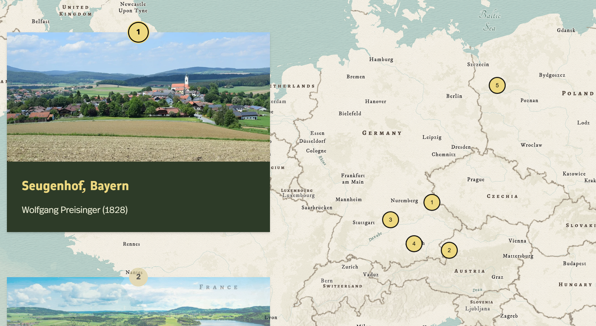

Historical Geography · Narrative Cartography
Tracing Family Migration to New Ulm
An interactive historical StoryMap tracing the interconnected migrations of the Preisinger, Wagner, and Tauscheck families from German-speaking Europe through Wisconsin to New Ulm, Minnesota.
Combining immigration records, historical maps, census data, and newspaper archives, the project explores how individual family histories intersect with broader patterns of migration, settlement, and cultural identity.